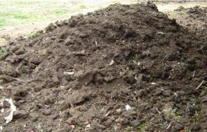
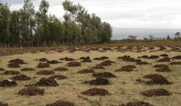
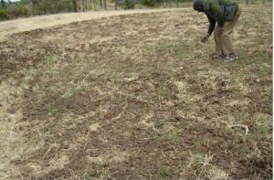
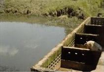
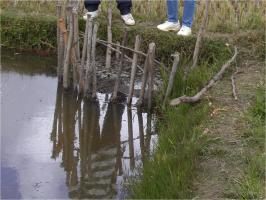

Manure
{kind=link}
Introduction
Manure is a valuable resource on an organic farm. Livestock are not efficient in taking nutrients from feed and forage. Normally, 75-90% of major nutrients that are fed to livestock pass directly to the animal into the manure. How good these nutrients can be returned to the soil, depends on the way the manure is stored and handled.
Raw manure is to be treated with caution as it includes threats to both human health and to the environment (e.g. pollution of the water ways). To reduce the risks, organic farmers usually compost manure before applying it.
If using raw manure, note:
- if it is to be applied to crops for human consumption, there must be at least four months between application of the raw manure and harvest
- if you grow crops that accumulate nitrates, e.g. brassicas, the raw manure must be applied at least four months before these crops are planted.
- apply raw manure in moderate amounts
- the soil must be warm
- the soil must be moist
The advantages of composting manure are following:
- More humus. Fully composted manure adds in the long term more humus to the soil than raw or partially composted manure. Humus increases soil fertility and improves soil structure.
- Less work. During the composting process, the volume of the fully composted pile is only half the size of the initial pile. This means half as many trips spreading half of the amount of manure, compared to spreading raw manure.
The role of manure
Biomass turnover is a major factor in crop-livestock systems, because crops and crop residues are meant to feed animals and the manures are used to maintain soil fertility. Although manure can supply other nutrients, it is commonly known that nitrogen (N) is the most important. The efficiency of N utilization and system productivity are influenced by the ratios of availability and losses occurring in the N transformation pathway.
|  |
| Compost manure, just before application |
| (c) TP Lanyasunya, Kenya
|
Interest and efforts towards utilization of manures from livestock to improve soil fertility and crop production have continued since Biblical time. Jesus gave parable whereby a fig tree which failed to produce fruits after applying dung (fertilizer in the new versions) was to be cut down. Ammonium (NH4+) is the most important soil fertility nutrient arising from manure. It is a product of microbial protein degradation in the ruminant gastrointestinal track. The microbes multiply into large numbers using ammonia (NH3) in reconstituting their own proteins, with excreted NH4+ being surplus to microbial requirements or spilled from imbalanced anabolic processes. From the animal production point of view, production of NH3 and NH4+ is nutritionally wasteful since they represent waste of dietary protein. Consequently, a livestock farmer utilizing manure will not count manure rich in NH4+ but rather a valuable resource for nitrogen recycling and cost reduction.
|  |
| Manure: Heaping before spreading |
| (c) TP Lanyasunya, Kenya
|
Supply of nutrients by manure
There can be huge loss (24 - 83 %) of NH4+ as a result of drying manure. This is as a result of NH3 volatilisation. Such losses can be reduced substantially (e.g. to 5%) by ploughing fresh manure into soil whereby NH4+ can be used directly by plants or converted to nitrate ( NO3-), which is another available form. The fact that highest NH4+ is in the fresh manure indicate that fresh faeces are of great potential as source of N. Therefore to maintain high quality in manure, drying and exposure to air should be avoided. In the contrary, it is ironically believed by many farmers, e.g. among communities in Eastern and Southern Africa, that fresh faeces (manure) is harmful to crops by causing 'burning'. As a result, there is low use of fresh faeces on the farms. Such beliefs may relate to the high NH4+ concentration in fresh faeces as evident in the present study. The burning may result from localised high concentrations caused by poor distribution. A great value is liable to be lost if fresh manure is not appropriately conserved and applied.
|  |
| Manure spreading in pasture field |
| (c) TP Lanyasunya, Kenya
|
Continuous direct application of freshly produced manure (faeces) may only be of practical value to perennial crops. In the case of seasonal crops, it would be recommendable to bulk the manures in heaps to minimise ammonia volatilization, while at the same time allowing decomposition to continue. The manure can then later be collected from the heaps and strategically applied. Application can be done by incorporating manure into the soil during seed bed preparation (ploughing), at planting or during weeding.
In manure use, precaution need to be undertaken to avoid burning of crops due to high concentration of ammonium. Uniformity of spreading and correct rate of nutrients supply to the crops are crucial considerations in order to prevent the burning. For these reasons, it is recommendable that in routine applications, the manure being used should be analysed for nutrient content, particularly total nitrogen (N), ammonium-N, phosphate (P2O5) and potash (K2O).
The crops requirements should be matched with the nutrient supply from the manures and soil. Availability of affordable analytical services is therefore necessary to support correct use of manures. Proper sampling is crucial for accurate analysis, and this will require that several sub-samples are collected and mixed to make up the samples submitted for analyses. The samples for analysis should be kept carefully to avoid biased results i.e. if losses occur in the process.
An example of a management system where fresh manure is efficiently utilized is in Sahel regions of West Africa. In this system, manure is directly deposited onto the land intended for cropping by grazing animals. This done through arrangements, which can be contractual in nature (Powell et al., 2003). Besides maximising nitrogen supply, this management system also has the advantages of storage and labour savings. Powell et al. (2003) suggested that another strategy to minimise nitrogen losses is to maintain a vigorous biological community (e.g., beetles, earthworms, chickens, turkeys) that can chop, bury, and decompose the manure so that it is quickly fixed into forms that are not easily leached or volatilized. Another important factor to consider when planning direct manure deposit is irregular distribution. Inevitably, more manure is deposited near watering, feeding, and bedding areas.
Pig manure
Pig urine and dung are good fertilisers for the land, so it is wise to make good use of them. After sweeping and cleaning the pens, the solid manure can be spread on the land directly. The wet, run-off manure and urine can be led through furrows (channels) into a collecting pond. With time the water will seep into the ground and the solid manure will build up. As the pond fills up with solid manure, you can remove the manure and put it on land. Before using the dung, it is best to let it decompose. Do so by putting it in a heap (pile) and under a shade. Keep the pile moist and turn it occasionally for it to increase compost quality.
Compost can be made by adding soil, grass cuttings, leaves, etc which can be used as fertiliser on cultivated lands or can be sold for an extra income.
The manure plays an important role in increasing soil fertility especially in improving the organic content in the soil. Only about 1/3 of the nitrogen in dung will be available to the plant. Pig dung has about 23% DM and 16% organic matter.
Production of pig dung
Fatteners (20 -100 kgs) can produce 2- 4kg; breeding pigs can produce 5-8 kg of mixed manure (dung and liquid) per day. On a 20-sow pig farm up to 300 tons of composted manure can be produced every year. The amount produced will however depend on type of feed, amount of drinking water, wastewater, beddings (litter) provided.
Application: 20-40 tons/ha/year for crop land and 10-20 tons /ha/year for grazing land. Usually just before the rains or during the rainy season.
Combined with on-farm fish culture
Pig keeping can be combined with on-farm fish culture. Pig manure can be used to fertilise the fishpond. The manure, or some (not too much) of the rich run-off from the pens, will stimulate the growth of any natural fish food and water plants. The plant Ipomoea reptans growing on the surface of the water grows for instance more rapidly and provide excellent green fodder for pigs. Pig manure in the pond increases the food available for the fish that in turn grow faster.
|  |
| Pig house with fish pond |
| (c) Stephen Gikonyo, Kenya
|
Goat manure
Manure
Goat manure is a useful product with commercial value and is used in many parts of East Africa. The manure has a higher content of nitrogen and phosphoric acid than that of cows. The urine is rich in nitrogen and potassium. The manure is an excellent fertilizer and has the potential to increase crop yields.
Compost
A very efficient method of making compost is to stack the manure in a neat square pile (manure from other livestock can be added to make an even more valuable by product, i.e., cow, sheep, donkey, chicken and camel dung). Where possible the pile should be kept moist by watering. After two weeks the whole pile should be turned over and left to mature. Whilst this pile is maturing a second pile can be started. In this way the farmer has a continuous supply of compost for his farm or for sale.
Manure and fish production
Animal manure is widely used in Kenya in fish production in earthen ponds in. The quality of manure as a fertilizer varies depending on the source animal and the quality of feed fed to the animal. Pig, chicken and duck manures increase fish production more than cow and sheep manure. Animals fed high quality feeds (grains) produce manure that is better as a fertilizer than those fed diets high in crude fibre. Fine manures provide more surface area for the growth of microorganisms and produce better results than large clumps of manure.
Manure should be distributed evenly over the pond surface area. Accumulations of manure on the pond bottom produce low oxygen conditions (during decomposition) in the sediment resulting to reduced microbial activity and sometimes result in the sudden release of toxic chemicals into the water.
Methods of applying Manure
- Crib method: A compost crib constructed using wooden sticks at one or more sides of the pond. It helps fertilize the water gradually. The manure in the crib requires frequent turning to facilitate the release of nutrients.
- Bag method: A bag is filled with manure and tied to the corner of the pond. The bag is shaken weekly or daily to release nutrients.
|  |
| Manure crib |
| (c) Mbugua Mwangi, Kenya
|
Manure application rates for ponds
Manure application rates depend on the size of the pond, which is expressed as surface area of the water in the pond. The recommended rate is 50 g of dry matter per m2 per week i.e. 5 Kg/100 m2/week.
The maximum rate depends on the quality of the manure, the oxygen supply in the pond and water temperature. If early morning dissolved oxygen (DO) is less than 2 ppm, manuring should be reduced or stopped until DO increases. When water temperatures are less than 18deg C, manure application should be discontinued. At low temperatures the rate of decomposition decreases and manure may accumulate on the pond bottom. A subsequent increase in temperature could then result in oxygen depletion.
Agricultural Lime
- Used to improve soil quality, which helps the organic and chemical fertilizers to work better. It also helps to clear up muddy water.
- In red soils; about 20 kg per 100 m2 can be applied. Black cotton soils may require a little more.
Characteristics of farm manure:
- Contains trace minerals and vitamins.
- Uses oxygen to decompose.
- Is highly variable in composition depending on feeds given to the animals and bedding used
- Can help reduce turbidity due to clay silt in the ponds
- Can help reduce seepage in ponds
- Some of the ingredients can be consumed directly by the fish
Integrated systems
Chicken/fish farming
Duck/fish farming
| Pig house with fish pond |
| (c) Stephen Gikonyo, Kenya
|
Pig/fish farming
Approximately 60 to 70 pigs/ha are required to produce a suitable quantity of manure (90 to 100 pounds of dry matter/acre/day) for tilapia production. The pigs are usually grown from 44 to 220 pounds over a 6-month period. In certain cultures and religion, where pigs are considered unclean, used of pig manure might reduce the marketability of the fish.
Harvesting
Fish produced for consumption should be harvested when they reach market size. In Kenya, tilapia are ready for harvesting within six to nine months depending on the size at stocking, target harvest size, water temperature and level of management employed. The time of harvesting is determined through regular sampling which should be done monthly. A day or two before harvesting, feeding and fertilizer application should be stopped. During harvesting:
- Fish should be checked for off flavors
- Fish should be harvested during cool weather
- Harvesting and transportation equipment should be set up well in advance to ensure reduced stress and minimal fish mortality.
Tilapias are best harvested by seining for partial harvesting and complete drainage for complete harvesting. Once harvested, fish should be handled with care and transported to the market while still fresh.
Growth and yields
Under proper management and optimal conditions, 1-gram fish are cultured in nursery ponds to 20 to 40 grams in 5 to 8 weeks and then stocked into grow-out ponds. In mono-sex, males can reach 200+ grams in 4 to 5 months, 400 + grams in 5 to 6 months, and 500+ grams in 8 to 9 months.
Dress-out percentage on tilapia is low compared to species such as trout and catfish. Tilapias have a dress-out of 51 to 53 percent of live weight for whole-dressed fish (head-off) and 32 to 35 percent for fillets.
Chicken manure
- As fertilizer for crop production
- Compost improvement
- Feed in fish ponds
- Biogas production
Average composition of Chicken manure
| Fresh Manure | Litter manure | |
| Dry matter % | 20-22 | 50 |
| Nitrogen | 1-1.5 | 1-2 |
| Phosphorus | 1-2 | 2 |
| Potassium | 0.7 | 1 |
| Calcium | 2.2 | 3 |
Quantify manure yield
Chicken manure can be used in fish ponds. The manure is partly eaten by the fish while the rest is used by plants to grow and then eaten by fish.
Dried poultry manure maybe used to feed ruminants (cattle and goats) in combination with grains and molasses.
A biogas digester can be used to make gas from the manure.
The slurry left over may also be used as fertilizer for use in crops or fish ponds.
- 100 layers will produce about 3 tons of manure during a 448 day period (from chicks to end of first laying period
- 1000 broilers will produce about 1.1 tons of manure in 42 days
Information Source Links
- Ouda JO (2007). Nutritive value and manure quality in supplemented maize stover and grass hay diets for ruminants. PhD thesis, University of KwaZulu Natal, South Africa
- Ouda JO, Modi, AT and Nsahlai IV (2006). Nutrient flow and manure quality in different diets fed to ruminant. In: Tenywa, M.M., Semalulu, O., Kasenge, V., Taulya,G. and Musinguzi, P. The 23rd Soil Science Society of East Africa (SSSEA) Conference. 23p.
- Wallace, J. (Ed)(2001). Organic Field Crop Handbook. Canadian Organic Growers Inc. ISBN 0-9695851-3-6.